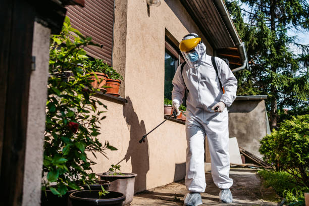
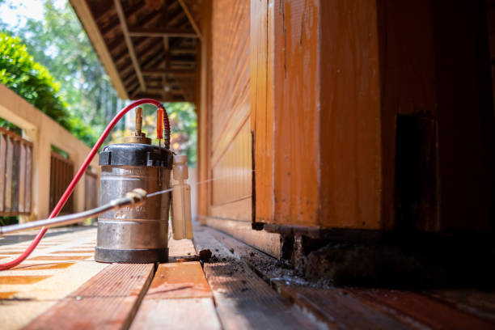

News
Common Pests in Seattle Overview
Effective Pest Prevention Methods Guide
Natural Remedies for Pest Control
About Us
Pest Control Seattle

What is the best way to keep pests out of Seattle homes?
Jun 05, 2024
Keeping pests out of your Seattle home can be a challenging task, but with the right strategies and preventative measures in place, you can minimize the risk of infestations and maintain a pest-free living environment.. There are several effective ways to keep pests at bay, from sealing up entry points to implementing proper sanitation practices.
One of the best ways to prevent pests from entering your home is by sealing up any cracks or gaps around windows, doors, and other entry points.
What is the most effective pest prevention strategy for Seattle residents?
Jun 05, 2024
Pest prevention is a crucial aspect of maintaining a healthy and safe living environment.. For Seattle residents, in particular, the damp climate can create ideal conditions for pests to thrive.
What is the importance of sealing cracks and crevices in Seattle homes to prevent pests?
Jun 05, 2024
Sealing cracks and crevices in Seattle homes is an essential step in preventing pests from invading your living space.. Pests such as ants, cockroaches, rodents, and spiders are always on the lookout for ways to enter homes in search of food, water, and shelter.

What is the role of proper food storage in pest prevention for Seattle households?
Jun 05, 2024
Proper food storage plays a crucial role in pest prevention for Seattle households.. The Pacific Northwest region is known for its lush greenery and abundant wildlife, making it an attractive destination for pests such as rodents, ants, and cockroaches.
What is the significance of regular maintenance in deterring pests from invading Seattle residences?
Jun 05, 2024
Regular maintenance is crucial in deterring pests from invading Seattle residences for a number of reasons.. Pests such as rodents, insects, and other critters are attracted to homes that provide easy access to food, water, and shelter.
How to Keep Seattle Pests at Bay: Top Prevention Tips for Homeowners
Jun 05, 2024
Seattle is a beautiful city known for its stunning views, vibrant culture, and thriving tech industry.. However, like any urban area, Seattle is also home to pests that can cause problems for homeowners.
Discover the Secret to Pest-Free Living in Seattle Homes
Jun 05, 2024
Have you ever struggled with keeping pests out of your Seattle home?. It can be a frustrating battle trying to keep insects and rodents at bay, especially in the Pacific Northwest where they seem to thrive.
Are Pesky Critters Invading Your Seattle Home? Learn How to Stop Them in Their Tracks
Jun 05, 2024
Are you tired of dealing with pesky critters invading your Seattle home?. From rats and mice to raccoons and squirrels, these unwelcome guests can cause damage to your property and pose health risks to you and your family.
Say Goodbye to Unwanted Guests with These Essential Pest Prevention Tricks for Seattle Dwellings
Jun 05, 2024
Living in Seattle has many perks, from the stunning views of the Puget Sound to the bustling food scene.. However, one downside that comes with living in this beautiful city is dealing with unwanted guests - pests.
Unlock the Key to a Bug-Free Home with These Must-Know Tips for Seattle Residents
Jun 05, 2024
Keeping your home free of bugs and pests is essential for maintaining a comfortable living environment.. As Seattle residents, we are no strangers to the challenges that come with keeping these unwanted visitors at bay.
Identifying common pests in Seattle homes
Jun 05, 2024
As residents of Seattle, it's important for us to be aware of the common pests that can invade our homes.. Identifying these pests early on can help prevent infestations and minimize damage to our property.
One common pest found in Seattle homes is the rat.
Effective pest prevention strategies for Seattle homeowners
Jun 05, 2024
Pest prevention is a crucial aspect of maintaining a comfortable and healthy home environment, especially in a city like Seattle where pests thrive due to the damp climate.. As a homeowner, it's important to be proactive in implementing effective pest prevention strategies to keep your home free from unwanted intruders.
One of the most basic yet essential steps in pest prevention is keeping your home clean and clutter-free.
Tips for sealing entry points to prevent pests from entering the home
Jun 05, 2024
As homeowners, we all want to keep our homes safe and free from unwanted guests.. One of the biggest challenges we face is preventing pests from entering our living spaces.
The importance of regular maintenance and cleanliness in pest prevention
Jun 05, 2024
Regular maintenance and cleanliness play a crucial role in preventing pests from infesting our homes and businesses.. It may seem like a mundane task, but the importance of staying on top of cleaning and maintenance cannot be understated when it comes to keeping unwanted critters at bay.
Pests such as rodents, insects, and termites are attracted to places that provide them with food, shelter, and water.
Hiring professional pest control services in Seattle for long-term prevention solutions
Jun 05, 2024
When it comes to dealing with pests in your home or business, it's always best to leave it to the professionals.. Hiring professional pest control services in Seattle for long-term prevention solutions is the smart choice for ensuring that your property remains free from unwanted intruders.
Pests can cause a variety of problems, from spreading diseases to damaging property.